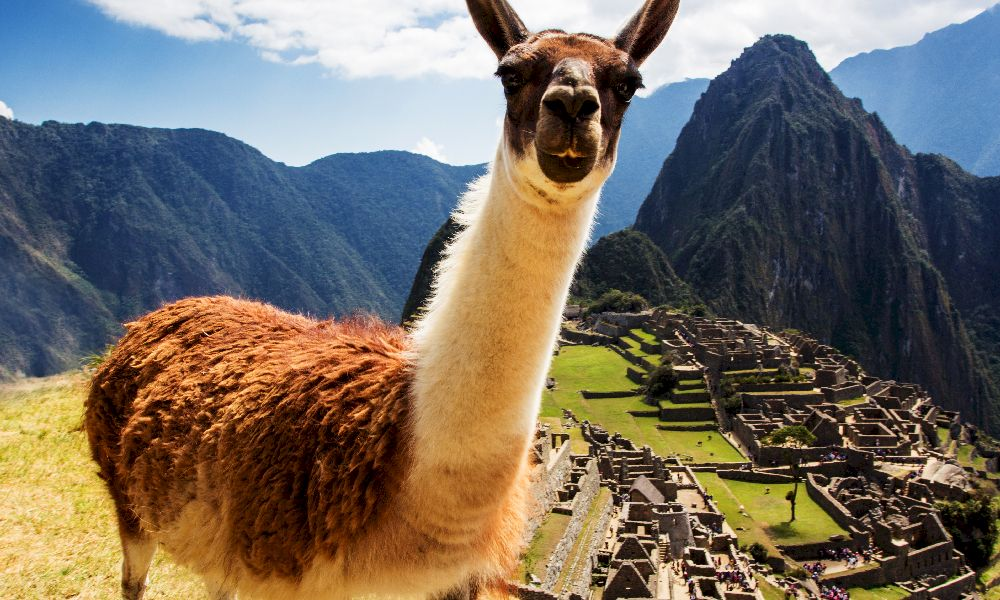
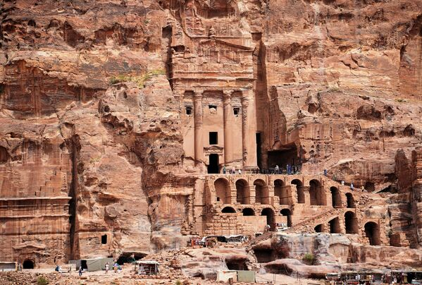

LOGO
Интересные места мира
узнайте новые, невероятные истории о местах, которые вы раньше не видели


Венеция
город, расположенный на воде, построенный на 118 островах и пересеченный каналами. Знаменита своей архитектурой в стиле ренессанс и готики, узкими улочками и гногостями. Каждый год Венеция привлекает туристов своим уникальным атмосферным красочным празднеством Карнавалом.

Мачу Пикчу
древний инканский город, расположенный на высоте более 2400 метров над уровнем моря в горах Перу. Этот удивительный архитектурный комплекс остался скрытым от испанских завоевателей и был открыт лишь в 1911 году. Мачу-Пикчу поражает своей красотой, гармоничным взаимодействием с окружающей природой и тайной своего происхождения, что делает его одним из семи чудес света.

Петра
это удивительный древний город, высеченный в скалах Йорданской пустыни в Иордании. Петра славится своими удивительными каменными строениями и некогда был столицей Набатейского королевства. Он является одним из наиболее изумительных археологических памятников мира и объявлен объектом Всемирного наследия ЮНЕСКО.